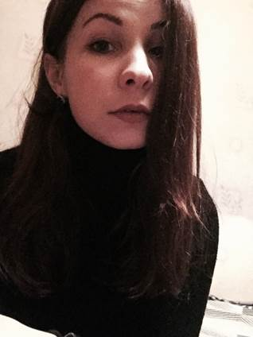
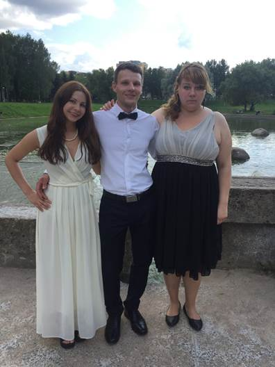
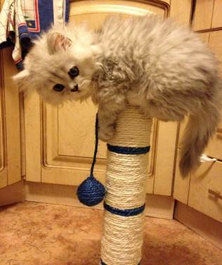
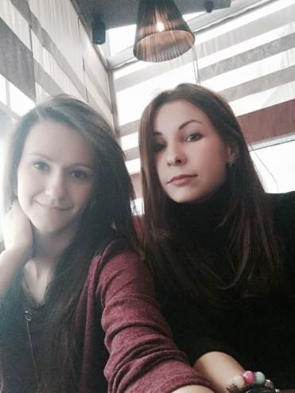
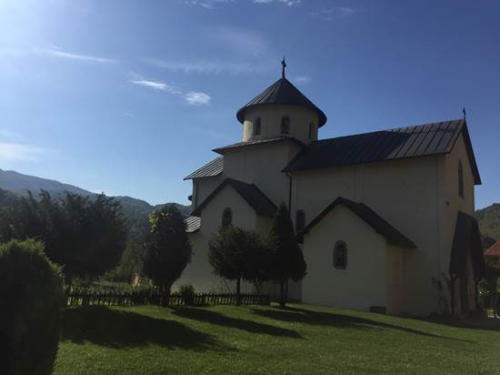
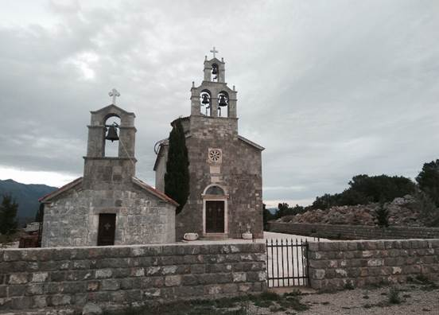

Resume
Full Name: Zaryna Lamasova

General Information
Address, phone, e-mail: Gomel, Zhemchuzhnaya st. 32/26, home phone 8 (0232) 39 -15-12 (18: 00-21: 00), mobile + 375-29-735-18-57 (MTS), smail_zara@mail.ru
Date of Birth (dd/mm/yyyy):
Family status: is single, no children.
Business trips: ready for business trips to near and far abroad for a short term - up to 3 months in a year.
The reason for search or changing a job: the search for new and interesting work for the long term.
Requirements for a new job: Salary depending on the complexity of the work, but should be decent and adequate professional growth in promising areas - J2EE PHP ORACLE DBMS MSSQL.
Education, foreign languages, diplomas and certificates
Diplom of professional secondary schools: 2013 GGDST,
Diplom of university:† studying in MECHANICS AND MATHEMATICS
FACULTY OF Belarusian State University
Professional education and certifications:
Languages:
- English - pre-intermediate
- Russian Ц free
Programming languages
HTML, WEB:
- The markup languages: HTML (incl. CSS, JavaScript etc.), AJAX,XML
- Frameworks: Jakarta Struts, Maven, Spring, Jakarta Cocoon, GWT, EXT
- Creation and support of the department ASOI
- ExtJS, Sencha Touch, AngularJS, Bootstrap 3, jQuery.
SQL:
- experience with SQL - query and SQL - operators in programming Delphi-application for the DBMS Oracle, MSSQL 2008/2010, MySQL, PostgreSQL
Visual C++:
- Total programming experience
Design Tool:
- MicroOLAP Database Designer for MySQL - designing database models, generate a database.
- ErWin - design models, import models, reverse engineering
Version Control Systems:
Ј GitHub
OS, DBMS
Platforms and OS:
- Windows - good knowledge of Windows - API for programming, extensive experience of administration OS
DBMS: .
- MySQL 5.015 - theoretical knowledge, installation experience, administration, backups.
Additional Information
Professional quality: I can lead production meeting, quickly assimilate complex stuff, I love new and interesting tasks that require non-trivial approach.
Positive character traits: communication skills, the ability to inspire confidence
Disadvantages:† insufficient design skills, the average English.
Hobbies: hiking, boating, car travel, powerlifting.
About my family
I have a brother and a sister they are both older than me.

My sister is 32 and she lives apart from me. My brother is 27 and he got married this year.
I have a cat his name is Barsik

†I have a best friend her name is Irina

I like traveling. My last trip was to Montenegro. Below are a couple of beautiful churches in Montenegro

